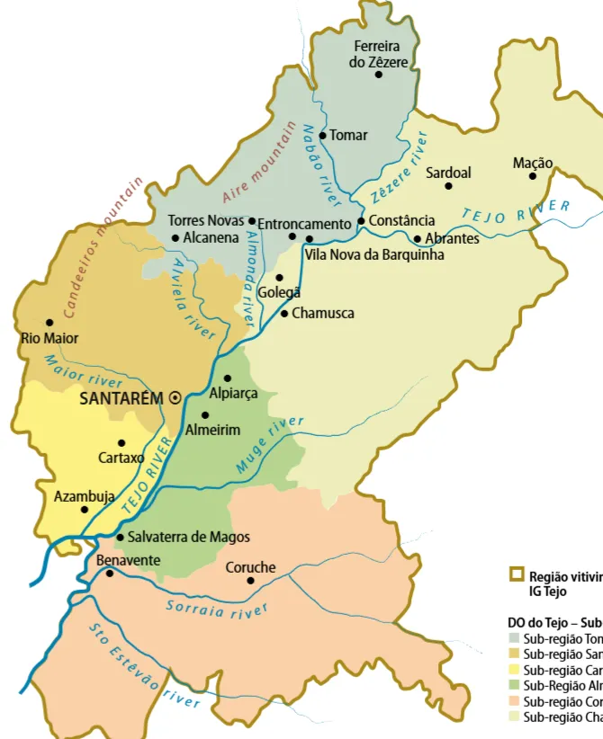
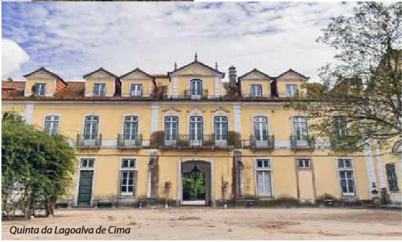

Chapter 4 · The Portuguese wine regions
Tejo Wine Region
Key figures (2022)
Viticultural area: 12,847 ha
Total Production: 68,600,000 litres
Average yield: 7,070 litres/ha
Certified wine types: 83%
History
The history of viticulture in the Tejo includes proof of Phoenician and Roman presence in the region. Charters from the kings of the Alfonsine dynasty document its existence since the Reconquista. By the end of the first half of the 13th century, some 30,000 pipes of wine had been exported to England. In modern times, the populations of municipalities most involved with vine cultivation and wine production (Almeirim, Alpiarça, Cartaxo, Chamusca, Coruche, Rio Maior, Salvaterra de Magos and Santarém) has increased drastically because of viticulture. The VQPRD regions were established in 1989. Situated in the centre of Portugal, with a vast area of land utilized for agricultural purposes, this wine region was created when it separated from the region formerly known as Estremadura. The renaming of the Comissão Vitivinícola Regional do Tejo (Tejo Regional Vitivinicultural Commission) and changes to its policy occurred in 2008. Currently, the following 6 subregions are classified as DO: Almeirim, Cartaxo, Chamusca,Coruche, Santarém and Tomar.
Terroir
Climate Köppen-Geiger classification:
Csb. Can be described as temperate southern Mediterranean. The summer has high temperatures during the day, with moderate and hot temperatures at night. Negative temperatures are recorded in winter. Temperate-humid climate with a dry season in summer The climate of this region is coastal. MCC System indices (Tonietto & Carbonneau, 2004): heliothermal index (HI): +2, cool night index (FI): -1, dryness index (DI) +1. The region stretches from the coast to DoTejo DO sparkling wines the Caramulo and Buçaco mountains. The whole region is influenced by the Atlantic, with it maritime winds and relative humidity, resulting in a high risk of infection with cryptogamic agents. There are frosts at the beginning of spring with adverse climatic conditions for the setting of inflorescences and a risk of hail in May.
Rainfall: of 500–600 mm, confined to the winter and spring months
Geology/ Soil science: The chief orographic accident is the Serra de Aires e Candeeiros mountain range, delimited by what we could call the Middle Tagus (Tejo) and the Tagus wetlands. The region has three distinct production zones: The soil of this wine-growing region determined by its proximity to the Tagus River. The region has three distinct production zones: Campo, Bairro and Charneca. Highly productive agricultural soils used for intensive farming, including that of viticulture, are found in the alluvial soils (Campo) on the extensive plains adjacent to the Tagus River (Rio Tejo), which are also known as the Tagus wetlands. Bairro, situated between the Tagus Valley and the foothills of the Porto de Mós, Candeeiros and Montejunto massifs has clay limestone soils on gently undulating terrain. Charneca lies to the south of Campo on the left bank of the Tagus River. With moderately fertile, sandy soils, its yields are lower than the regional average.
Vineyard elevation: 10–100 metres.
Types of wine produced
Tejo IG wines or Tejo regional wines: Red, white, rosé, semi-sparkling, light wine.
DO Tejo wines (VQPRD). The denomination of the following subregions may be used: Almeirim, Cartaxo, Chamusca, Coruche, Santarém and Tomar): Red, rosé, white.
(VEQPRD)
DoTejo DO liqueur wines (VLQPRD)
Aguardente de Vinho (brandy from wine spirit)
Vinagre de Vinho (wine vinegar)
Regional contacts
Technical information: Comissão Vitivinícola Regional do Tejo (Tejo Regional Vitivinicultural Commission) S. Pedro – Apartado 393, 2001-905 SANTARÉM – Tel.: 243 309 400, Fax: 243 309 409 Cultural information on the wine
of the region: Colegiada dos Enófilos de S. Vicente (“Collegiate of Oenophilists of São Vicente”), Avenida Almirante Reis, 58 – r/c Dtº. Museu Rural e do Vinho do Concelho de Cartaxo (Cartaxo Municipality Rural Museum and Wine Museum), Avenida 25 de Abril, Quinta das Pratas, 2070-000 CARTAXO; Website www.cm-cartaxo.pt Institutions of higher learning
and viticultural research: Escola Superior Agrária de Santarém (ESAS) (Santarém Agricultural College), Quinta do Galinheiro – S. Pedro – Apartado 310, 2001-904 SANTARÉM; www.esa.ipsantarem.pt
Certification authority: Comissão Vitivinícola Regional do Tejo, S. Pedro – Apartado 393, 2001-905 SANTARÉM – Tel.: 243 309 400, Fax: 243 309 409 –
Website: www.cvrtejo.pt, e-mail: geral@cvrtejo.pt
Enotourism information: Rota dos vinhos doTejo (Tejo Wine Route), Campo Infante da Câmara – Casa do Campino 2000-014, SANTARÉM; Tel.: 243 330 330, http://www.rotavinhooeste.com;

Região vitivinícola DO do Tejo – Sub-regiões
Sub-região Santarém
Sub-Região Almeirim Sub-região Coruche Sub-região Chamusca
www.rotadovinhoribatejo.pt.

Producer and bottler information:
Itinerary 1- Tesouro gótico
http://www.ivv.min-agricultura.pt/
Itinerary 2- Touros e cavalos
np4/1736.html, Yearbook 2011, pp.
Itinerary 3- Beira Tejo Itinerary 4- Tesouro manuelino | Castelos templários
214–216. www.viniportugal.pt/index. php?option=com_content&task. adegas
Botany (biodiversity features) and authorised
Açores Portugal continental
varieties
Graciosa
Legal basis: Ministerial Order n.º 226/2014 of 6 November and Decree-
Pico
Law n.º 212/2004 of 23 August
Terceira
Red wines: Alfrocheiro (Tinta Bastardinha), Alicante Bouschet, Madeira Alvarelhão (Brancelho), Amaral,
Porto Santo
Aragonez (Tinta Roriz, Tempranillo),
Madeira
Baga, Barreto, Bastardo (Graciosa), Cabernet Franc, Cabernet Sauvignon, Caladoc, Camarate, Carignan, Carmenère, Castelão, Cinsault, Cornifesto, Corropio, Cot (Malbec), Dolcetto, Dornfelder, Durif (Petit Syrah), Esgana Cão Tinto, Espadeiro, Galego, Gamay, Grand Noir, Grenache, Jaen (Mencia), Labrusco, Lemberger (Blaufränkirsch), Marselan, Marufo (Mourisco Roxo), Merlot, Monvedro, Moreto, Moscatel Galego Tinto, Mourisco, Nebbiolo, Negra Mole, Nero, Nero-d’Avola, Parreira Matias, Petit Bouschet; Petit Verdot, Pinot Noir, Português Azul (Blauer Portugieser), Preto-Martinho, Ramisco, Rufete (Tinta Pinheira), Sangiovese, Sezão, Syrah (Shiraz), Tannat, Teinturier, Tinta Barroca, TintaCaiada (Pau Ferro, Tinta Lameira), Tinta-Carvalha, Tinta da Barca, Tinta Francisca, Tinta Gorda, Tinta Grossa (Carrega Tinto), Tinta Miúda, Tinta Negra (Molar, Saborinho), Tinta Pomar, Tintinha, Tinto Cão, Tinto Pegões, Touriga Fêmea, Touriga Franca, Touriga Nacional, Trincadeira (Tinta Amarela, Trincadeira Preta), Verdelho Tinto, Verdial Tinto, Vinhão (Sousão), Zinfandel, Arinto Roxo (R), Bastardo Roxo (R), Chasselas Roxo (R), Donzelinho Roxo , Fernão Pires Rosado, Galego Rosado, Gewürztraminer, Gouveio Roxo, Malvasia Cândida Roxa, Malvasia Fina Roxa, Malvasia Preta Roxa (Pinheira Roxa), Moscatel Galego Roxo, Pinot Gris (Pinot Grigio) and Verdelho Roxo.

White wines: Alicante Branco, Alvarinho, Antão-Vaz, Arinto (Pedernã), Asaraky, Avesso, Azal, Bical (Borrado das Moscas), Boal Branco, Boal Espinho, Cerceal Branco, Cercial, Chardonnay, Chenin, Códega do Larinho, Colombard (Semilão), Donzelinho Branco, Encruzado, Fernão Pires (Maria Gomes), Folha de Figueira (Dona Branca), Fonte Cal, Galego Dourado, Gouveio, Greco (Greco di Tufo), Grüner Veltliner, Jampal, Loureiro, Malvasia, Malvasia Branca, Malvasia Cândida, Malvasia Fina, Malvasia Rei, Manteúdo, Marquinhas, Marsanne, Moscadet, Moscatel Galego Branco, Moscatel Graúdo, Mourisco Branco, Müller Thurgau, Perrum, Petit Manseng, Pinot Blanc, Pintosa, Rabigato, Rabo de Ovelha, Ratinho, Riesling, Rotgipfler, Roussanne, Sauvignon (Sauvignon Blanc), Seara Nova, Semillon, Sercial (Esgana Cão), Sercialinho, Síria (Roupeiro, Códega), Tália (Ugni Blanc, Trebbiano Toscano), Tamarez (Molinha), Terrantez, Terrantez do Pico, Trajadura (Treixadura), Trincadeira-das-Pratas, Verdejo, Verdelho, Viognier, Viosinho and Vital.



Prestigious wineries
in the region:
Tejo is the region with the best agricultural soils in Portugal. In the past, many vineyards on the rich soil were converted to plots for other crops. In the meantime, modern, qualityorientated vineyards have sprung up in limestone and sandy areas. Quinta Monteiro de Matos, Santarém.
Quinta do Casal Branco, Almeirim.
Adega do Cartaxo, Cartaxo. Adega Cooperativa de Almeirim, Almeirim.
Quinta da Badula, Rio Maior.
Companhia das Lezírias, Benavente.
Pinhal da Torre, Alpiarça.
Quinta da Alorna - Vinhos, Almeirim.
Casa Cadaval, Salvaterra de Magos.
Fiúza & Bright, Almeirim
Quinta da Lapa, Azambuja Quinta da Lagoalva de Cima, 2090-222 ALPIARÇA Falua.